The most important and frequently used functions in J are the
ones that manipulate the tree structure. As these are unique to
J, these are also the ones that will take more time to
digest.
A tree in J is always balanced. This allows an easy way to store
it. Just store the leaf nodes, and also the shape. So if you want
to reshape the tree, just change the shape. This is done
using $ dyad. It considers the tree as a list (not the
inderlying list). If the list has a length different from the
product of the shape values, then the list is replicated
(possibly partially). The same symbol $ used as a monad
will extract the shape of a tree. The monad # returns the
number of items in a tree. If we want to see the
underlying list, then you can use the monad ,
(mysteriously called ravel). To really change the shape you need
to use m n $ , x
To access items we use the { family.
get the first
item use the monad {.. To get the last item use the
monad {:. To get an item at a specific
position (0-based) use the dyad {.
Most often a tree is best considered as a list of items. Such
lists are sometimes mere packets of a small number of
items. There is a quick way to unpack such a tree:
'a b c' =: x
This command expects x to be a list of 3 items. These
get stored in the variables a, b and c.
To get a new tree consisting of all the items
except the first use }.. If you want to remove the last
item then use the monad }:.
|: (monad and dyad)
applies |. (monad and dyad) to the shape.
This effectively permutes the indices always maintaining the
following contract: If $\pi$ denote the permutation, then
the new entry at $(\pi(i_1),...,\pi(i_k))$ will always
equal the old entry at $(i_1,...,i_k)$.
The dyad |: will transpose a matrix.
Next we shall discuss three important ways to combine two trees
to produce a bigger tree.
Keeping an analogy in mind might prove helpful here:
When
we work with fractions we often prefer to express them in their
reduced forms. However, when we perform an operation on two
fractions in reduced forms, the immediate result may not be in
reduced form, e.g.,
$$
\frac 18+\frac 38 = \frac 48.
$$
So we need to do a bit of post-processing (cancellation in this
example) to achieve the reduced form.
Similarly, J likes to keep its trees balanced (all branches have
same length, and all siblings have same number of children). When
we combine two such trees, the immediate result may not be
balanced. So J performs some post-processing to balance the
tree. It helps to have an idea of what this involves. Basically,
there is only one guiding principle: always pad shorter things to
match longer counterparts. An example will help. Here is an
unbalanced tree:
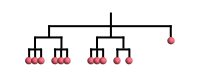
The last branch is shorter than the rest, and the second branch
has one less leaf node. To make it balanced J first grows the
short branch until it is as long as the longest branch:
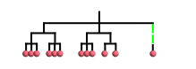
Now at each level we shall find the maximum number of children,
and pad smaller numbers to the right. We start doing this bottom
up. After the bottom most layer is done, the tree looks like this:
First the trees are combined by merging their root nodes:
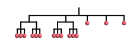
Step 1: The result of direct appending
Then the resulting tree is balanced:
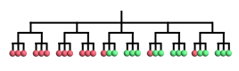
Step 2: The final result
The simplest case is
of course, where the tree in step 1 is already
balanced. This is what you'll need most of the time (though
often you'll find yourself in the unbalanced situation by
mistake!). There is one situation however, which is not covered
by this: when one of the two trees is just the root node:
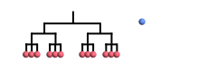
Step 0: The blue atom to be appended
Then
"merging the root nodes" would not produce a tree at all. In
this case, we create a new item of the same shape as the other,
where the atom is replicated in all its leaf nodes:
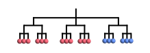
Step 1: The final result
Intuitively, appending is a way to grow a longer list.
,:
Another natural way to combine two trees is by creating a new
tree with these two trees as items (and then balancing if
needed). This is called lamination, and effected
by ,:.
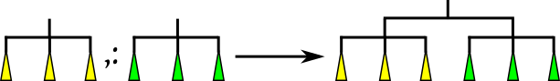
The new tree needs to be balanced.
Here's one complete example with balancing.
Step 0: the two trees to be
laminated
The two trees are hung from a common root node.
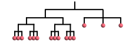
Step 1: after combining
Then we balance the tree:
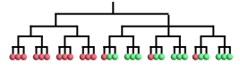
Step 2: the final result
As usual, the most frequently encountered situation is where the
tree in step 1 is already balanced. Intuitively, lamination is
the way to grow a list of lists.
,.
This is yet another way to combine two trees which is not very
intuitive. If we have a list of $x$-values and a
corresponding list of $y$-values, then stitching will
produce a list of $(x,y)$ pairs. More precisely, given two
trees with equal number of items, the corresponding items pairs
are appended.
Step 1: two trees to be stitched together
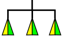
Step 2: the final result
If the numbers of items are not equal, then J
reports a length error.
,
Sometimes you need to see the underlying list. This is
called ravelling, and is effected by the
monad ,. In terms of trees, it creates a new tree with the
same leaf nodes in the same order, but immediately under the
root. If the original tree is just the root node, then ravel
creates a new root node above it.
,:
This creates a new tree, with the old tree as its single item. In
other words, it adds a parent to the root node, and that parent
becomes the new root node. A leading 1 is added to the shape.
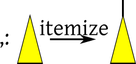
Itemization
In
terms of sets it is like converting $x$ to a singleton
set $\{x\}$.
The dyad ; effectively does the same thing as the dyad ,, but after
boxing. The result is a tree with two leaf nodes under a root,
the leaf nodes being boxes containing the original
trees. Simple!
This is the monad ;. It expects a list of boxes, unboxes
the items and then tries
to append them together. As the items may be
wildly different in shape and type, this may entail a massive amount of recasting
and balancing.
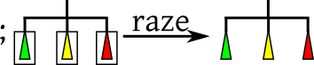
The new tree may need to be balanced
Remember that unboxing keeps unboxed things
unaltered. So if the tree were a list of unboxed items, then raze
is just same as appending the items.